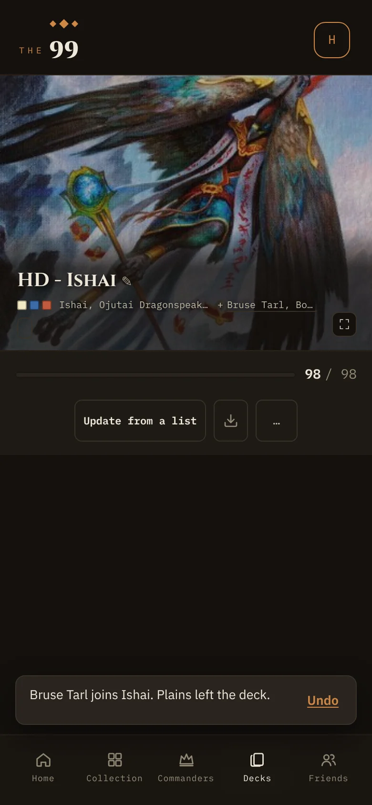
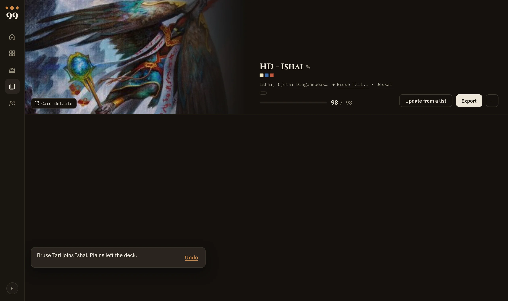
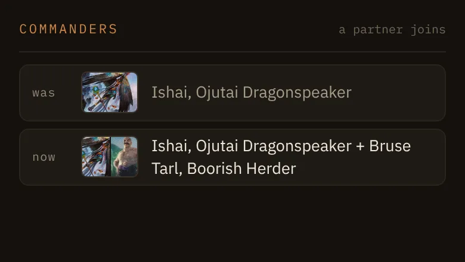

After
Nothing new on the deck page but the toast. Discard undoes a pending change as shipped; the toast’s Undo is for right after, and is the only way back on a brew.
A1 · deck page, phone

The sheet closes on the deck under the pair (98 in the body). A deck toast says both moves, Bruse Tarl joins Ishai. Plains left the deck., with Undo, which puts both back.
A1 · deck page, desktop

Desktop: the shipped toast slot. The pending banner shows the shipped commander line, and Plains as a cut.
A2 · review page

Review: the shipped Commander section reads a partner joins; Plains sits in Going out. History after commit: the shipped version line Ishai → Ishai & Bruse Tarl, with Plains in its diff.